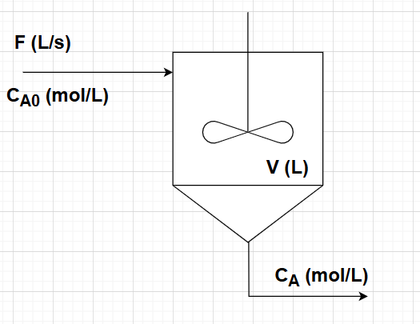
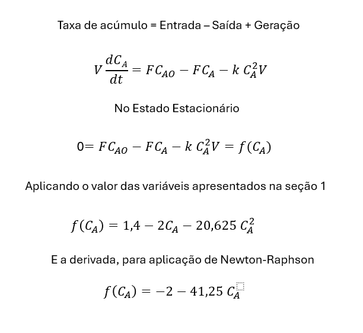
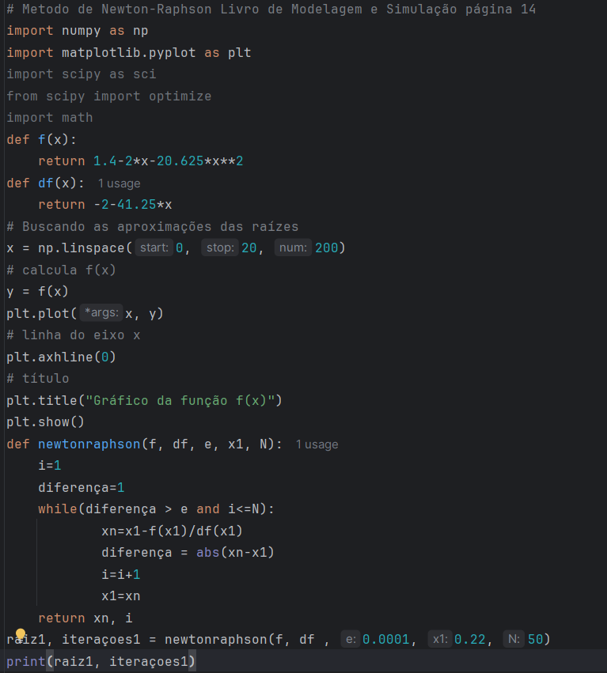
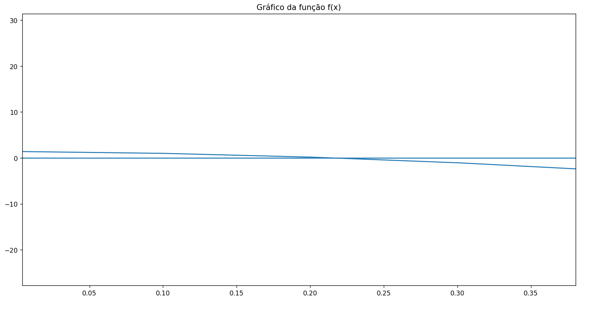
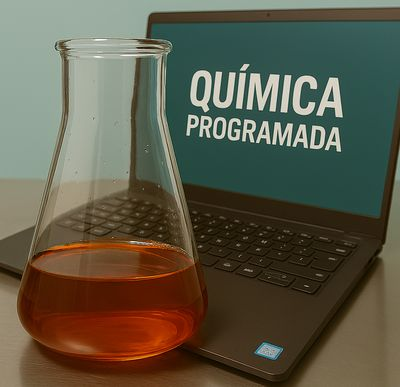

O objetivo dessa postagem do Química Programada é determinar a concentração CA do estado estacionário para o processo que ocorre no CSTR detalhado na Figura 1. Esse problema é apresentado na página 14 do livro de "Modelagem e Simulação de Processos Químicos" de Ivan Carlos Franco. No reator ocorre uma reação de segunda ordem em relação ao reagente CA. Os valores das variáveis indicadas na figura e da constante de reação são listados a seguir:

Na Figura 2 é apresentado o equacionamento do problema. O reagente A, que entra no reator, é consumido por uma reação de segunda ordem. No estado estacionário, a vazão de saída no reator é CA.

Na Figura 3 , é apresentado o algoritmo para plotagem da função apresentada na Figura 2 e a resolução da mesma utilizando o método de Newton-Raphson. Na Figura 4, vemos o gráfico da função e temos uma raiz aproximada na região de 0,22. Usamos esse valor como aproximação no método no Newton-Raphson. O valor encontrado pelo algoritmo na terceira iteração foi de 0,2165, de acordo com o resultado apresentado na obra "Modelagem e Simulação de Processos Químicos".



Desenvolvimento : Química Programada